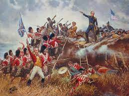
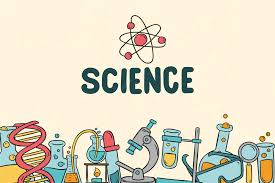
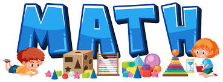

I like studying English and learning the grammatical rules that help me write better. Our English teacher is very kind and teaches us very well, which helps me to learn better. My vocabulary improves as
I learn each lesson of the English subject. I love English as a subject.
English help you learn new knowledge and you can learn something new from it.English is
very important becasue if you go to other countries you need to know how to speak english to
communicate with people.

The Hundred Years' War was a long struggle between England and France over succession to the French throne. It lasted from 1337 to 1453, so it might more accurately be called the "116 Years' War." The war starts off with several stunning successes on Britain's part, and the English forces dominate France for decades.
History is the study of change over time, and it covers all aspects of human society. Political, social, economic, scientific, techno logical, medical, cultural, intellectual, religious and military developments are all part of history.
Science is a systematic endeavor that builds and organizes knowledge in the form of testable explanations and predictions about the universe.
Math helps strengthen reasoning skills and critical thinking. It helps us think analytically about the world and reason logically. The same steps you take to understand a problem, identify the knows and unknows and then solve it, can be applied to other areas of your life.
ICT enables the use of innovative educational resources and the renewal of learning methods, establishing a more active collaboration of students and the simultaneous acquisition of technological knowledge.